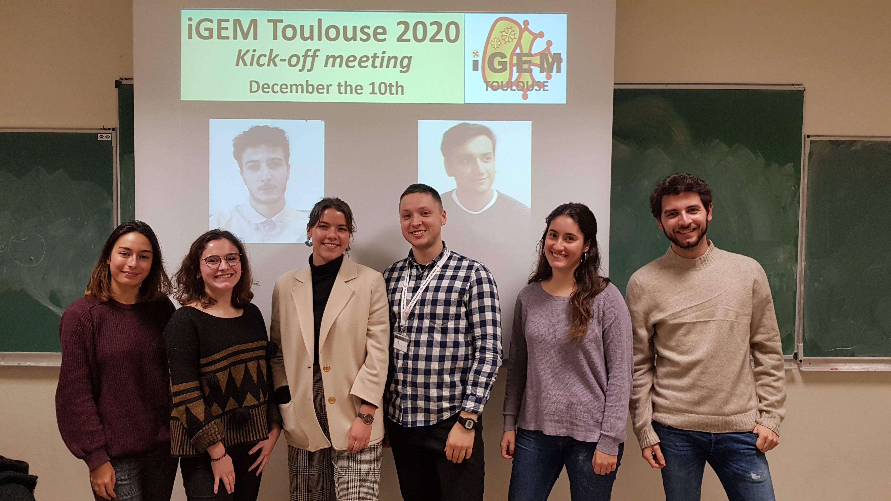
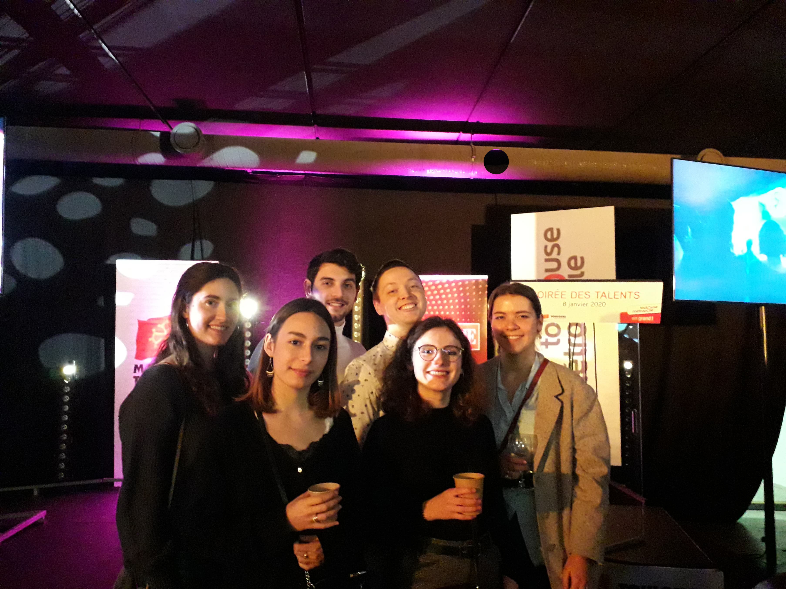
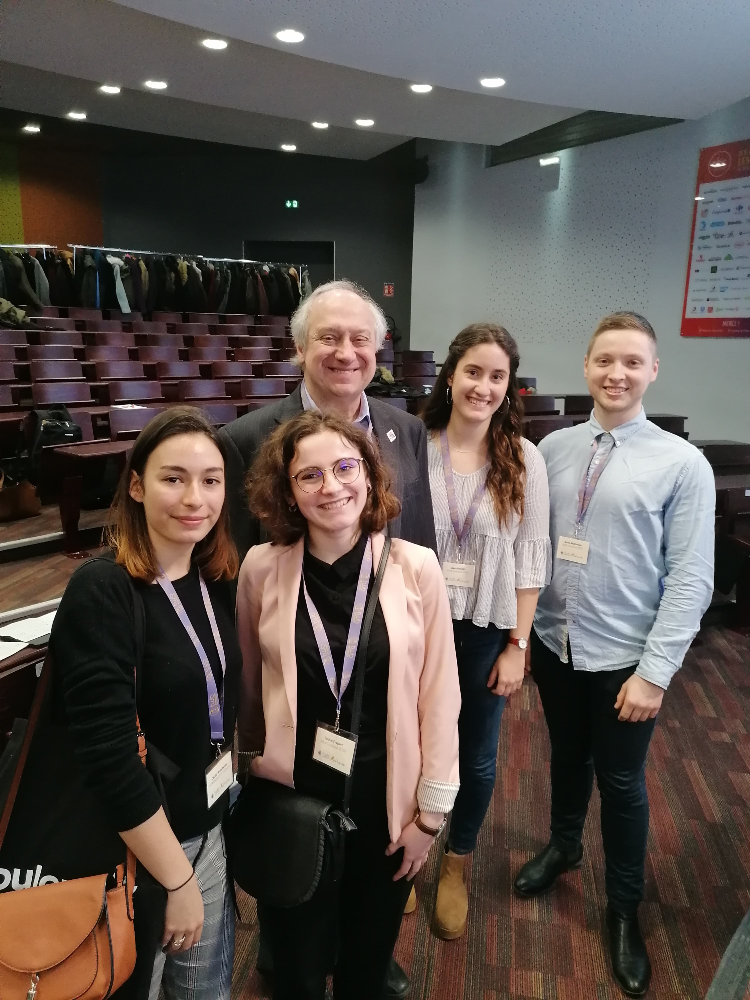
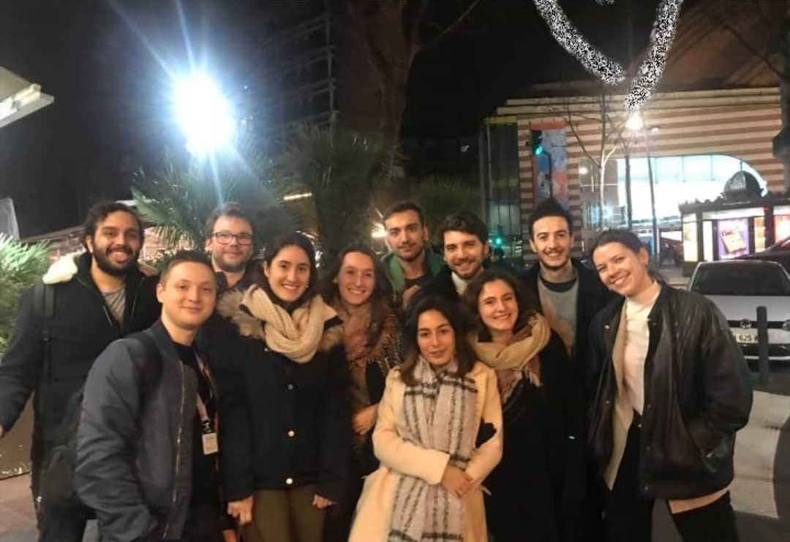
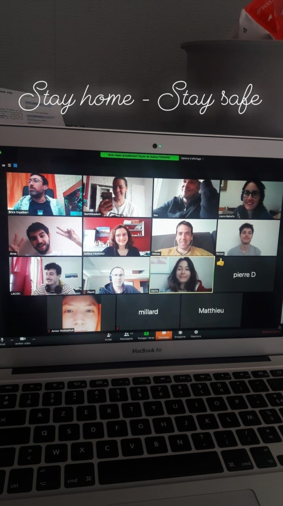
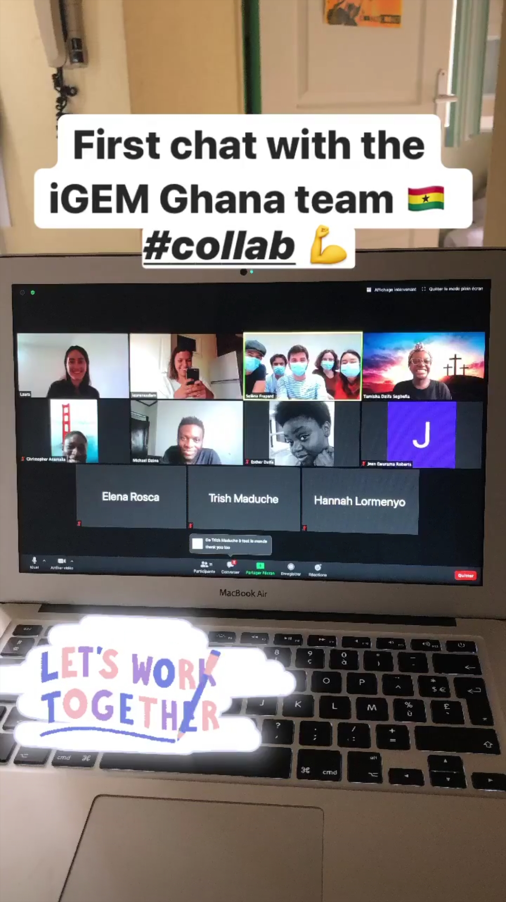

Notebook
Here is a summary of what we did for our project during the year. We were able to meet in person until March and then we had to quickly adapt to the worldwide situation because of COVID-19. We then switched to online meetings, and we didn’t meet in person until we went back to the lab in June. Even if we were all together in the lab, since our team is made up of less than 10 people, we had to follow many hygiene rules, such as wearing a face mask, keeping a safe distance between us all the time, washing our hands very often…Here is an overview over the accomplishments and the challenges we had to manage during our Project
December
10/12/19
First meeting, welcome from the advisors, and introduction of everyone.
Definition of team roles:
-
Arno: Wiki leader
-
Cécilia: Treasurer
-
Laura: Organisation leader
-
Laurène: Communication leader
-
Solène: Human Practices leader

17/12/19
Introduction of iGEM and judging handbook.
January
Project
09/01/20
We started brainstorming different project ideas.
16/01/20
Start of research funding.
30/01/20
We had the idea of using electrosynthesis for our project.
Human Practices
08/01/20
We attended the “Soirée des talents Toulousains 2019”, an award ceremony for Toulousian of the year 2019 organized by Toulouse Métropole. It was the perfect opportunity to start team building, and also to network with local entrepreneurs.

February
Project
05/02/20
Of all the project ideas we had, we decided to focus on three of them.
Human Practices
06/02/20
We attended TWB start-up day, this event brings together European key players in the biotech start-up business. And we had the chance to meet and chat with Randy Rettberg.

Team Building
Team Building dinner with previous iGEMERS (iGEM Toulouse 2018, 2017).

March
Project
05/03/20
Brainstorming continues, we decided to focus on two possible projects.
16/03/20
Our country started a lockdown due to COVID-19, from now on all our meetings will be held virtually.

20/03/20
We decided that we will work on the production of molecules in space for our project. We will grow two microorganisms in coculture: Clostridium ljungdahlii PETC (an acetogen) and Saccharomyces cerevisiae (a yeast).
26/03/20
Modelling leader was chosen (Eliot). We started brainstorming on which molecules we want to produce in space.
Human Practices
20/03/20
Interview with Jean-Marie François, specialist in Saccharomyces cerevisiae, we asked him about the nitrogen source and the production of provitamin A by yeast. For more information click [here](Lien au rapport de l’entretien avec JMF).
24/03/20
Interview with Benjamin Erable, responsible of research at CNRS, specialist in electroactive biofilms, he explained electrosynthesis and suggested having the electrolyzer outside our bioreactor. For more information click [here](Lien au rapport de l’entretien avec Benjamin).
April
Project
02/04/20
We researched which are the available resources we could use in space for our project.
09/04/20
Brainstorming on the molecules we want to produce continues, this week we focused on different vitamins that could be useful in space.
16/04/20
We have chosen Pierre as our entrepreneurship leader, and Solène as our Ethics leader. We also decided on our project name: iGEMINI. Brainstorming about the molecules we want to produce continues, this week in addition to working on vitamins, we also researched what flavoring molecules we could synthesize.
23/04/20
We decided on producing provitamin A, and as flavoring molecules we want to produce limonene, geraniol and brazzein.
30/04/20
We will use photoinduction to let astronauts choose the flavor they prefer, there will be two LEDs colors: red or blue.
Human Practices
09/04/20
We decided to focus on how synthetic biology is essential for long-duration space travel for our Human Practices.
May
Project
07/05/20
We started defining our experimental plan for the summer.
13/05/20 - 20/05/20 - 28/05/20
We designed the sequences we want to clone.
Human Practices
11/05/20
Interview with Dr. Natalie Ley (Head of the Microbiology Research Unit, coordinator of the Space Life Science program at SCK-CEN) and Dr. Rob Van Houdt (specialist in genetic engineering at Microbiology Research Unitat at SCK-CEN), both of them work for the MELiSSA project (a space research program aiming to develop an artificial ecosystem for regenerative life support systems for long-term space missions to lunar bases or flights to Mars). For more information click [here](Lien au rapport de l’entretien avec Natalie et Rob).

Collaboration
13/05/20
First contact with Ghana Team in order to start a collaboration
28/05/20
Discussed with Marie-Pierre Escudié, our Ethics advisor, to decide what we want to achieve for our integrated human practices and public and education engagement.
June
Project
04/06/20
We designed the sequences we want to clone.
08/06/20
We were finally able to go to our lab! Five out of the eight team members went back, we wore masks all day and made sure we were keeping a safe distance between us. We got all the plasmids that Gilles Truan could give us, and C. ljungdahlii strain.
09/06/20 - 18/06/20
We designed all the primers we will need.
11/06/20
We designed the fermentation protocol.
12/06/20
We ran the orders for our DNA sequences.
Collaboration
11/06/2020
First online meeting with Ghana Team! We presented each other’s projects and started discussing on ways we can collaborate with each other.

Entrepreneurship
12/06/2020
We had an online meeting with Catalyseur, to start talking about how we could create a start-up from our project.
15/06/20
The whole team is back in the lab! As always we follow the rules established by our university: face masks at all times, we maintain a safe distance between us, and wash our hands often.

16/06/2020 - 17/06/2020
Security training by our university.
Human Practices
06/06/2020
We participated at Exposcience, an exposition for young scientist in Occitanie, where we presented our project and discussed about it with middle school students.
18/06/2020
Meeting with Arnaud Cockx, Gas-Liquid Reactor Engineering professor at INSA Toulouse, to discuss about out bioreactor.
Week 22/06 – 28/06
Fermentation
First cultures with Saccharomyces cerevisiae on acetate and ethanol.
Cloning
Plasmids
Transformation into E. coli stellar of all the plasmids: pFL38, pHR0016, pRS313, pFL36, pRS316, pRS315, pMRI34, pENZ-047.
Miniprep plasmid control by enzymatic digestion, and verification on agarose gel.
All the plasmids of the transformation are correct except for T15. So we will do another digestion to another digest of verification.
This very profile does not meet our expectations and adds up to the pile of unsatisfying digestions. Two hypotheses can be formulated from this observation: either the sequence we have been given is incorrect, or the plasmid we aquired is not the one we asked for (aka pHR0016). Investigations need to be carried out to determine which hypothesis holds.
pUC19 digestion: SbfI-BamHI, BamHI-EcoRI, SbfI-XmaI, XmaI-EcoRI, SbfI-XbaI, BamHI-SacI, SbfI-SacI, XbaI-BamHI, XmaI-Xbal.
Gel purification of digested pUC19, and determination concentration.
Preparation of S. cerevisiae culture for amplifying yeast genome sequences.
Provitamin A
Miniprep of transformed plasmids.
PCR from the minipreps in order to obtain our 6 fragments: DPP1, tCYC-Hmg1, pTDH3-tEF1, CrtE-Tadh1, His3, DPP1 down. We verified that we have the correct fragments with an agarose gel, so we redo the PCR in the same conditions.
We mix both PCR, and we purify it from an agarose gel, the bands on this gel are where we expect them, and we measured the concentration of DNA for each fragment
Rose and brazzein
PCR from the miniprep to obtain a fragment with LEU2.
25/06/2020
Meeting with Marie-Pierre Escudie about the ethical matrix and security.
29/06/2020
We started working on a video game for high school and middle school students.
FUN FACT:
Arno, our wiki leader, spilled his salad dressing all over his computer!
Week 29/06 – 05/07
04/07 – 05/07
We participated at the German Meetup, where we presented our team and our poster. We got first place in the poster competition! It was amazing to be able to meet with other teams and learn about their projects.
[photo german meetup]
Fermentation
Preculture of 20mL S. cerevisiae in YNB (60% Ac and 40% EtOH): DPP1, tCYC-Hmg1, pTDH3-tEF1.
Preparation of the preculture media.
Culture monitoring: not all culture appears to be growing in all the conditions that we tested, this may be due to a preculture issue.
Cloning
Purification of 5 out of the 9 pUC19 vectors. And PCR of all the fragments needed for all the cloning’s. Most of them successful.
Provitamin A
PCR for the three fragments for the two clones, and gel verification. All results are positive, so we follow with the infusion of the three fragments into pUC19. Some clones grew! So, we verified them and most of them seem to have the insert.
Rose/Brazzeine and Provitamin A
Purification of the PCR fragments and infusion into pUC19.
FUN FACT:
Anton blew up his gel on the ground and didn’t tell anyone.
Laurene’s gel is nominated for worst gel in history.